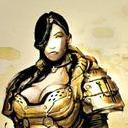

Forums galactiques > Assemblée Galactique : diplomatie officielle > [rp solo] Les Soeurs, ou la chute du Serpent Noir
Pages : 1
| Hélène Whorstone Respect diplomatique : 63  22/01 ETU 23:17 | Score : 11 Détails Il y a des prédicateurs de mort et la terre est pleine de gens à qui l’on devrait prêcher de renoncer à vivre.
Nous ne nous soucions pas d’être épargnés par nos meilleurs ennemis, ni par ceux que nous aimons du fond du cœur. Donc, laissez-moi vous dire la vérité. Guerrières, mes Sœurs, je vous aime du fond du cœur. Je suis pareille à vous, je l’ai toujours été. Et je suis aussi votre meilleure ennemie. Laissez-moi donc vous dire la vérité. Je connais la haine et l’envie qui vivent dans vos cœurs. Vous n’avez pas assez de grandeur d’âme pour ignorer la haine et l’envie. Ayez donc la grandeur de n’en pas avoir honte. Hélène Whorstone, Ainsi parlait Sarah. Prologue : L’assaut. Tout n’est que suie. Je lance mon regard loin devant moi, et je ne vois que d’épaisses colonnes de fumée sale, s’élevant de part et d’autre du champ de bataille. Je quitte, l’espace d’un instant, l’excitation de la bataille, pour me plonger toute entière dans ce paysage d’apocalypse. Une sensation de toute puissance, enivrante, presque sensuelle… Je redescends brusquement, alors que mes guerrières me dépassent. Nous avons terminé de bombarder les défenses du palais gouvernemental, qui se dresse encore devant nous, massif, puissant. Symbolique. Les explosions de nos mortiers déchirent nos tympans, mais exacerbent également notre adrénaline. Je crie, pour bien me remettre dans le mouvement et encourager mes camarades d’insurrection. Je charge en tête, brandissant mon fusil, entraînant à ma suite ma légion de femmes, et atteint une petite colline de débris, que j’escalade. D’ici, je vois charger les troupes ennemies. Une écrasante majorité d’hommes, portant le blason des troupes d’élite de Neriah. Nos bombardements les ont poussés à sortir de leurs derniers retranchements. Surtout, ne pas leur laisser l’initiative de la charge, ou nous sommes mortes. Je lève le bras et l’abaisse vers le château, et mon armée dévale comme une seule femme la dénivellation qui nous sépare de ce qui reste des camps de défense. Nous sortons les lames, les haches, les matraques, les griffes et les armes de poing. Notre masse se déverse, hurlante et désordonnée… Je les laisse passer autour de moi… elles sont innombrables, enragées, avides, vives… …Et c’est le choc. | ||
| Hélène Whorstone Respect diplomatique : 63 23/01 ETU 22:35 | Score : 10 Détails Beaucoup meurent trop tard, et quelques-uns meurent trop tôt. Le précepte : « Meurs à temps » nous est encore étranger.
Meurs à temps ; tel est le conseil que donne Sarah. Mais celui qui n’a jamais vécu à temps, comment pourrait-il mourir à temps ? Mieux vaudrait qu’il ne fût point né. C’est le conseil que je donne aux superflus. Mais les superflus eux-mêmes attachent bien trop d’importance à leur mort, et la noix la plus creuse exige encore qu’on la casse. Hélène Whorstone, Ainsi parlait Sarah. Chapitre I : Ainsi meurt le tyran, et perdure la tyrannie. Dans l’heureuse mort de l’ennemi, là est la jouissance. La bataille se termine, nous la remportons haut la main. Notre rage, notre vaillance, et surtout notre nombre ont suffit à défaire les rangs de la garde nerienne, ou tout du moins à nous percer un passage vers le palais gouvernemental. Nous l’investissons. Nous y trouvons Neriah, cloîtré dans le bureau de son défunt gouverneur. Il sait comme nous ce qui l’attend : une mort lente et douloureuse, sur cette petite planète de province qu’il n’aurait sans doute jamais dû visiter. - Enfin je vois celle à qui je dois ma destitution, pour le moins violente et fort discourtoise par ailleurs, me lance-t-il à notre entrée dans la petite pièce. - C’est une insurrection populaire, à quoi vous attendiez-vous ? - Peut-être à un peu de subtilité féminine… - Oh, ne vous en faites pas, nous savons aussi traiter notre hôte de façon appropriée. Je claque des doigts, et trois de mes Sœurs se dirigent vers Neriah. Les deux premières le mettent à genoux et le maintiennent à terre, tandis que la dernière lui saisit le visage. Elle plonge alors sa main dans sa bouche et, sans prêter attention aux râles étranglés de sa victime, lui arrache la langue, qu’elle jette à terre. Elle entreprend ensuite de l’éborgner, plantant ses griffes à l’intérieur de ses orbites pour en extraire deux prunelles sanguinolentes. Les cris de Neriah se muent en un gémissement à peine conscient, alors qu’il semble perdre lentement connaissance. - Traînez-le jusqu’à la balustrade et attachez-le, dis-je, que tous puissent voir le supplicié. Et maintenez-le éveillé jusqu’à ce que j’ordonne de l’abattre, je veux qu’il soit pleinement conscient de sa douleur. Mes Sœurs s’exécutent, elles sortent du bureau et tirent Neriah jusqu’à la balustrade concomitante, d’où son gouverneur local avait pour habitude de déclamer ses discours. Elles l’attachent au dessus du vide. Je me tiens juste derrière lui. Je contemple la vue. Nous sommes au dernier étage du palais, et en bas la bataille est terminée. Je déguste cet instant. Le Serpent Noir est à moi. Je veux que tous se souviennent de cette image. Moi, Hélène Whorstone, resplendissante, juchée aux côtés d’un symbole qui se meure. Y a pas à dire, ça en impose grave ! | ||
| Hélène Whorstone Respect diplomatique : 63 25/01 ETU 00:49 | Score : 12 Détails …Aussi, pareille à toutes les visionnaires de l’autre monde, ai-je lancé au-delà de l’homme la flèche de mon désir illusoire. Au-delà de l’homme, en vérité ?
Hélas ! mes Sœurs, ce Dieu que je créais était ouvrage et folie humaine, comme tous les dieux. Il était homme, pauvre fragment d’homme et de moi, fantôme né de ma cendre et de ma flamme, et certes il ne me venait point de l’au-delà. Qu’arriva-t-il, mes Sœurs ? Je sus me vaincre, bien que souffrante ; je portai mes cendres aux monts, j’inventai une flamme plus claire. Et voici, le fantôme s’évanouit devant moi. Pour moi, guérie désormais, ce serait douleur et tourment que de croire encore à de tels fantômes, ce serait humiliation et douleur. Voilà ce que j’ai à dire à ces gens de l’outre-monde. Hélène Whorstone, Ainsi parlait Sarah. Chapitre II : Comme un herpès sur le cul d’une catin. Nous prîmes le contrôle du palais, et constatâmes avec satisfaction que toute l’administration de la planète y était concentrée, centralisée et agglutinée comme un herpès sur le cul d’une catin. Je m’affichais vite comme la maîtresse incontestée des lieux, à la fois pour me faire accepter par nos provinces sans contestation possible, mais aussi pour faire taire les éventuelles dissensions qui ne manqueraient pas de naître parmi les Sœurs, maintenant que nous détenions le pouvoir. C’est pourquoi je décidais de faire installer un ansible central sur cette planète, pour rendre instantanée la communication avec la communauté galactique. Seules les planètes natales des empires disposent de ces ansibles, je fis donc le nécessaire pour faire parvenir celui du monde natal de Neriah. Cela coûtait extrêmement cher et prendrait du temps, mais c’était la condition sine qua non pour m’affirmer. Si j’apparaissais comme celle qui avait donné à leur monde le statut de Natal, la population locale me serait plus facilement acquise. Mais rien n’est simple, décidément… Neriah allait trouver le moyen de refaire parler de lui, même d’outre tombe. | ||
| Hélène Whorstone Respect diplomatique : 63 25/01 ETU 22:46 | Score : 7 Détails Voici l’antre de la tarentule. Veux-tu la voir elle-même ? Voici sa toile. Touche-la. Elle frémira.
La voici qui s’empresse. Sois la bienvenue, tarentule ! Tu portes sur ton dos ton triangle noir et ta marque, et je sais aussi ce qu’il y a dans ton cœur. La vengeance habite en ton cœur ; ta morsure produit une croûte noirâtre ; le venin de ta vengeance fait tournoyer les âmes. Je vous parlerai donc en parabole, vous qui donnez le vertige aux âmes, prédicateurs d’égalité. Vous n’êtes que des tarentules, la rancune cachée vous habite. Mais je finirai bien par découvrir vos cachettes ; aussi je vous ris au nez, de mon rire des hautes cimes. Aussi je déchire votre toile, pour que la fureur vous fasse sortir de vos cavernes de mensonge, et fasse jaillir vos paroles de « justice ». Hélène Whorstone, Ainsi parlait Sarah. Chapitre III : Ma langue dans ton oreille. - SORTEZ, POUACRES ! Laissez-moi ! Du vent ! Je chasse d’un geste rageur les subordonnés venus m’apporter les dernières nouvelles du front. Les derniers partisans de Neriah sont plus nombreux et plus teigneux que ce qu’on avait prévu… et mon état de santé n’arrange pas les choses. Ça commençait avec des absences, puis des malaises, qui me forçaient immanquablement à me précipiter dans le bureau de l’ancien gouverneur. Ils me prenaient les reins, les jambes, la poitrine puis la tête, me faisant souffrir le martyr. Mais une fois dans cette pièce, le mal se calmait. Invariablement. J’ai fini par ne plus en sortir. Mais la douleur a repris, et je ne sus plus alors que faire pour m’en débarrasser. Le bruit me faisait résonner le crâne, je décidai donc de me cloîtrer dans le bureau, et congédiai violemment mes conseillères et autres parasites. Comme une sournoise gueule de bois. Et c’est là qu’il commença à me parler. Pas véritablement une voix claire, mais une présence. Des réminiscences étrangères à mes pensées, déjà tourmentées par le calvaire. Elles prenaient forme et sens et, lentement, tel un parasite qui se glissait dans mon organisme, un dialogue s’installa. - Pars, lui disais-je, m’adressant au vide de la pièce sombre. - Tu me demandes de partir ? Alors que c’est TOI qui a pris possession de ma demeure ? - Neriah… Tu me fais chier jusque dans mes sommets de mégalomanie… - De quoi te plains-tu, la pute ? J’ai ma langue dans ton oreille, cela devrait te combler d’aise, j’en ai fait hurler plus d’une avant toi… - Arrête… - Ca me rappelle notre petite Aerynn… Une sacrée catin, celle-là. Si je te racontais cette nuit de volupté à la machine à café, mmmh ?… Et la voix ne s’éteignit plus. |
Pages : 1
Forums galactiques > Assemblée Galactique : diplomatie officielle > [rp solo] Les Soeurs, ou la chute du Serpent Noir